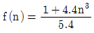
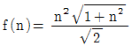
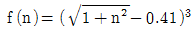
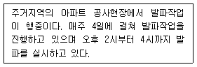
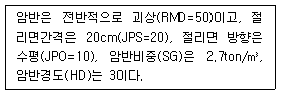
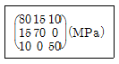
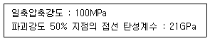

화약류관리기사 (2013-03-10 기출문제)
1과목: 일반화약학
1. 화약류 성능 시험방법 중 폭약 10g을 장전하여 중량 약 17kg의 탄환을 발사시켜, 이 때에 구포의 후퇴에 의한 흔들림각을 측정하여 성능을 알아보는 것은?
- 구포시험
- 유리산시험
- 탄동구포시험
- 연주시험
(정답률: 94%)

2. 아지화납 뇌관의 관체에 주로 사용하는 금속재료는?
- 구리
- 알루미늄
- 납
- 텅스텐
(정답률: 96%)
3. 니트로글리세린 1g이 연소반응을 일으킬 때의 산소 평형값(g)에 가장 가까운 값은?
- -0.387
- -0.740
- 0.000
- +0.035
(정답률: 100%)
4. 산소공급제에 해당하는 것은?
- 전
- TNT
- 질산나트륨
- 목분
(정답률: 100%)
5. 다음 중 흑색화약을 제조할 때 edge runner(압마기)를 가동하는 가장 주목적에 해당하는 것은?
- 물 흡습
- 가비중 상승
- 혼화
- 작은 용기로 분배
(정답률: 93%)
6. 연화(불꽃)류에 사용되는 화염제로 녹색 불꽃을 내는 것은?
- Sr(NO3)2
- Ba(NO3)2
- Na2C2O4
- CaCO3
(정답률: 100%)
7. 다음 중 도폭선을 발파에 사용할 때 기폭시키는 방법으로 가장 옳은 것은?
- 성냥으로 기폭시킨다.
- 도화선으로 기폭시킨다.
- 뇌관으로 기폭시킨다.
- 흑색화약으로 기폭시킨다.
(정답률: 95%)
8. 피크린산의 제조 원료는?
- 크실렌
- 페놀
- 나프탈렌
- 톨루엔
(정답률: 85%)
9. 단위 중량당 산소를 가장 많이 발생하는 물질은?
- 테트릴
- 연약
- 질산칼륨
- 과염소산암모늄
(정답률: 64%)
10. 다음 중 군용 흑색화약의 배합성분의 비율에 가장 가까운 것은? (단, KNO3 : S : C 순서이다.)
- 40 : 30 : 30
- 62 : 20 : 18
- 75 : 10 : 15
- 15 : 5 : 80
(정답률: 90%)
11. 도화선에 대한 설명으로 옳지 않은 것은?
- 연소속도가 일정해야 하며, 단위길이의 약량이 균일해야 한다.
- 연소초시가 1m당 70~80 ±10sec 이어야 한다.
- 수중폭파 사용 도화선은 수심 1m의 곳에서 2시간 정도의 내수성을 가져야 한다.
- 도화선의 선지름은 4.6mm 이상이고 심약은 흑색 분말 화약을 사용한다.
(정답률: 96%)
12. 피크린산(picric acid)을 저장하거나 사용할 때 금속물과 직접 접촉하는 것을 피하는 가장 큰 이유는?
- 금속 용기를 부식시키므로
- 중금속과 반응하여 유해가스가 발생하므로
- 화약 자체가 둔화되므로
- 금속과 화합하여 예민한 화합물이 되므로
(정답률: 90%)
13. 다음 중 여름에 침출에 대해 특히 주의해서 취급해야 할 것은?
- 면약
- 펜트리트
- TNT
- 부동 다이너마이트
(정답률: 69%)
14. 젤라틴 다이너마이트를 탄동구포 시험한 결과 흔들림 각도가 16도였다. RWS는 약 몇 %인가? (단, 기준약 다이너마이트의 흔들림 각도는 18도이다.)
- 79
- 85
- 90
- 95
(정답률: 83%)
15. 다음 중 혼합화약류에 속하지 않는 것은?
- 흑색화약
- 액체산소폭약
- 카알릿
- 피크린산
(정답률: 89%)
16. 안정도 시험방법이 아닌 것은?
- 내열시험
- 순폭시험
- 가열시험
- 유리산시험
(정답률: 94%)
17. 함수폭약(slurry explosives)에 대한 설명 중 틀린 것은?
- 내수∙내습성이 좋다.
- 질산암모늄이 사용된다.
- Gel 상태의 폭약이다.
- 갱내에 사용할 수 없고 운반과 취급이 어렵다.
(정답률: 100%)
18. 다음 중 화약류의 시험방법으로 옳은 것은?
- 폭약의 안정도를 조사하기 위하여 낙추 시험을 하였다.
- 탄광 폭약의 폭력을 평가하기 위하여 내열시험을 하였다.
- 폭속시험을 통하여 둔성폭약시험을 하였다.
- 공업뇌관의 위력을 측정하기 위하여 납판시험을 하였다.
(정답률: 100%)
19. 발화하면 바로 폭발하고, 강압에서도 사압현상을 나타내지 않은 기폭약은?
- 질화납
- 뇌홍
- DDNP
- 헥소겐
(정답률: 78%)
20. 화약류의 감도분류 중 열적작용에 해당하는 것은?
- 내화감도
- 마찰감도
- 안정도
- 전기감도
(정답률: 96%)
2과목: 발파공학
21. 계단식 발파에서 공저 장약밀도(Ib)를 단위 천공길이당 폭약량(kg/m)으로 정의할 때 64mm 직경의 발파공에 장약밀도 0.8kg/ℓ인 ANFO를 장전할 때 공저 장약밀도는?
- 약 1.6kg/m
- 약 2.6kg/m
- 약 3.6kg/m
- 약 4.6kg/m
(정답률: 30%)
22. 다음 중 전색물의 조건으로 옳지 않은 것은?
- 구입 및 운반이 쉬운 재료
- 공벽과의 마찰이 작은 재료
- 폭약의 기폭시 연소되지 않는 재료
- 압축률이 작지 않아서 단단히 다져질 수 있는 재료
(정답률: 48%)
23. Trim blasting을 실시하려고 한다. 천공경이 50mm일 때 발파설계 내용으로 옳지 않은 것은?
- 공간격을 80cm로 설계하였다.
- 장약밀도는 168.75g/m로 설계하였다.
- 저항선을 104cm로 설계하였다.
- 공저장약은 주상장약밀도의 2배 정도로 설계하였다.
(정답률: 35%)
24. 발파해체 공법 중 붕락시 구조물 중앙부는 수직붕괴가 일어나고 좌우측부는 외측에서 내측으로 끌어 당겨 붕괴되도록 유도하는 공법으로 제약된 공간이나 도심지에서 주로 적용되는 것은?
- 단축붕괴공법
- 상부붕락공법
- 점진붕괴공법
- 내파공법
(정답률: 42%)
25. 탄성파의 전파속도가 3200m/sec인 암반을 발파했을 때 A지점에 전달된 진동속도가 10mm/sec이고 폭원과 A지점 사이인 B지점의 주파수가 80Hz였다. A지점에 전달되는 진동속도를 4mm/sec로 제어하기 위해서 B지점에 형성해야 될 에어겝(불연속면)의 깊이는?
- 약 10.0m
- 약 14.5m
- 약 18.4m
- 약 23.0m
(정답률: 15%)
26. 다음 중 제안자에 따른 누두지수 함수의 연결로 옳지 않은 것은?
- Hauser : f(n)=n2
- Brallion :

- Marescott :

- Dambrun :

(정답률: 45%)
27. 습윤한 발파공에 분산 장약을 실시할 때, 삽입 전색장의 길이로 적절한 것은? (단, 발파공의 직경은 76mm이다.)
- 45.6 cm
- 74.6 cm
- 91.2 cm
- 107.6 cm
(정답률: 22%)
28. 계단식 발파에서 파쇄입도에 대한 설명으로 옳은 것은?
- 일반적으로 파쇄입도는 발파 후에 얻어지는 파쇄된 암석의 평균 크기로 정의된다.
- 동일한 비장약량이라면 저항선 크기는 파쇄입도에 영향을 주지 않는다.
- 전색장이 길수록 파쇄암의 크기는 작아진다.
- 파쇄암의 크기가 클수록 적재 효율이 증가한다.
(정답률: 24%)
29. 수중에서 계단식 발파를 시행하고자 한다. 다음 설계방식 중 옳지 않은 것은?
- 경사공의 경우 천공 및 장약작업이 어려워 수직공에 비해 비장약량을 10% 증가시킨다.
- 수압을 보정하기 위해서 수심 1m 당 0.01kg/m3의 비장약량을 증가시킨다.
- 암반 위에 덮여있는 표토(진흙)층을 보정하기 위해서 표토층~1m 당 0.02kg/m3의 비장약량을 증가시킨다.
- 암반층을 보정하기 위해서 암반계단높이 1m당 0.03kg/m3의 비장약량을 증가시킨다.
(정답률: 32%)
30. 다음 중 소음의 전파 등에 관한 설명으로 옳지 않은 것은?
- 음원에서 방사되는 음의 강도가 방향에 의해서 변화하는 상태를 지향성이라고 한다.
- 지향성이 큰 경우 특정방향의 음압레벨과 평균음압레벨과의 차이를 지향지수라고 한다.
- 자동차 도로와 같이 소음원이 다수 연속하여 이어지는 경우를 점음원이라 한다.
- 벽을 투과하여 소음이 생기는 경우처럼 음원이 넓게 펼쳐진 경우를 면음원이라 한다.
(정답률: 39%)
31. 계단식 발파에서 수직천공과 비교하여 경사천공에 대한 설명으로 옳은 것은?
- 자유면 반대방향의 후면 파괴가 증가한다.
- 절리와 같은 불연속면의 영향을 적게 받는다.
- 천공작업이 용이해진다.
- 느슨한 암석의 자유면 보호에 유리하다.
(정답률: 38%)
32. 계단식 발파에 있어서 공간격을 결정할 때는 계단높이 H와 저항선 B의 비 즉, H/B값에 따라 달리 결정된다. 공간격이 저항선에 의해서만 결정되는 기준으로 맞는것은?
- H/B ≥ 4 일 경우
- H/B > 4 일 경우
- H/B ≥ 6 일 경우
- H/B < 6 일 경우
(정답률: 45%)
33. 다음 중 심빼기 발파에 대한 설명으로 옳지 않은 것은?
- 심빼기 발파는 자유면을 증가시킨 목적으로 실시한다.
- 심빼기의 위치는 터널막장 어느 장소에도 위치될 수 있다.
- 평행공 심빼기는 소결현상을 방지하기 위하여 저비중의 폭약을 사용한다.
- 경사공 심빼기는 터널 단면이 크고, 장공 천공을 위한 장비투입이 가능한 경우에는 주로 적용된다.
(정답률: 42%)
34. 다음 중 누두공 시험에 대한 설명으로 옳지 않은 것은?
- 누두공 시험의 결과는 경험적으로 LCW3으로 표현되는 시험식으로 정리되고 있다.
- 적당한 폭약을 적당한 깊이에 장전해서 폭파하여 그 결과 생기는 누두공에 대해 관측하는 시험이다.
- 폭약의 위력이나 암석발파에 대한 저항성을 알고, 약량산정을 위한 자료를 얻을 목적으로 실시한다.
- 근래에는 소형의 모형실험으로 대신하는 경우가 많다.
(정답률: 27%)
35. 다단식 발파기(Sequential Blasting Machine)를 이용한 발파에 대한 설명으로 옳지 않은 것은?
- 제어발파가 가능하며, 발파진동 및 소음을 줄일 수 있다.
- 결선 후 연결여부 및 저항을 손쉽게 확인할 수 있다.
- 표면뇌관이 터지는 소음으로 민원을 발생시킬 수 있다.
- 누설전류가 있는 곳에서는 사용할 수 없다.
(정답률: 40%)
36. 다음과 같은 조건에서 발파를 실시할 때 적용되는 생활 진동 규제기준으로 옳은 것은?

- 60db(V) 이하
- 65db(V) 이하
- 70db(V) 이하
- 75db(V) 이하
(정답률: 48%)
37. 다음 중 측벽효과(channel effect)에 관한 설명으로 거리가 먼 것은?
- 불발잔류약이 발생하기 쉽다.
- 약경이 공경보다 작을 때 발생한다.
- 고폭속의 에멀젼 폭약을 사용할 때 주로 발생한다.
- pre-splitting 발파에서는 측벽효과를 방지하기 위해 전폭성이 좋은 점폭약을 사용해야 한다.
(정답률: 53%)
38. 터널 굴착시 smooth blasting공법에 대한 설명으로 옳지 않은 것은?
- 천매암, 결정편암과 같이 절리, 층리, 편리 등이 발달한 암석에서는 효과가 적다.
- 천공간격이 보통의 발파법보다 좁기 때문에 천공수가 늘어난다.
- 터널 상부에 보안물건이 있을 때 진동감쇠를 위해 적용된다.
- 굴착면을 평활하게 하여 수정작업이 줄어든다.
(정답률: 53%)
39. 폭약의 폭발력을 특정한 방향으로 전달하기 위한 반구형 또는 원뿔구조를 가지고 있는 폭약에 대한 설명으로 옳지 않은 것은?
- 성형폭약(Shaped Charge)이라 한다.
- 저폭속 폭약을 사용한다.
- 먼로 효과(Munro effect)를 이용한다.
- 철골이나 철판을 절단할 때 사용한다.
(정답률: 40%)
40. 철광석 광산의 노천채굴발파에서 다음과 같은 조건인 경우 Lilly(1986)의 발파지수는 얼마인가? (문제 오류로 복원중입니다. 정확한 내용을 아시는 분께서는 오류신고를 통하여 내용 작성 부탁 드립니다. 정답은 2번입니다.)

- 복원중(정확한 보기 내용을 아시는분께서는 오류 신고를 통하여 내용 작성부탁 드립니다.)
- 복원중(정확한 보기 내용을 아시는분께서는 오류 신고를 통하여 내용 작성부탁 드립니다.)
- 복원중(정확한 보기 내용을 아시는분께서는 오류 신고를 통하여 내용 작성부탁 드립니다.)
- 복원중(정확한 보기 내용을 아시는분께서는 오류 신고를 통하여 내용 작성부탁 드립니다.)
(정답률: 40%)
3과목: 암석역학
41. 다음 불연속면의 특성 중 암반과 불연속면의 투수성에 가장 큰 영향을 미치는 것은?
- 간극
- 방향성
- 벽면강도
- 거칠기
(정답률: 50%)
42. 크리프 거동에 대한 설명으로 옳지 않은 것은?
- 1차 크리프 구간에서 응력을 제거하는 경우 영구 변형률이 남지 않는다.
- 2차 크리프 구간에서 응력을 제거하는 경우 영구 변형률이 남는다.
- 2차 크리프 구간에서 크리프 변형률은 시간에 따라 로그함수적으로 증가한다.
- 3차 크리프 단계는 대부분의 암석에서 지속시간이 매우 짧다.
(정답률: 45%)
43. 평면변형율 및 평면응력 상태에 대한 설명으로 옳지 않은 것은?
- 3차원 문제를 2차원적으로 해석하기 위한 것이다.
- 터널단면의 응력해석에는 평면변형율보다는 평면 응력상태를 적용한다.
- 평면변형율 상태는 평면에 수직한 변위가 일정 하다고 가정한다.
- 평면응력상태는 평면에 수직한 응력이 0이라고 가정한다.
(정답률: 14%)
44. 암석의 강도를 측정하는 방법 중 점하중강도시험에 대한 설명으로 옳지 않은 것은?
- 점하중강도시험은 현장 및 실험실에서 시험이 가능하다.
- 점하중강도시험은 암석의 여러 가지 물성과 상관 관계를 가지는 지표를 구하는 시험으로서 시험이 간편하다.
- 점하중강도시험은 주로 일축압축강도를 구하는데 이용되나 이론적으로는 전당강도와 더 관련이 깊다.
- 점하중강도시험은 동일지역에 존재하는 다양한 크기의 시료에 대해 10회 정도 실시하며, 점하중 강도지수는 그 평균으로 구한다.
(정답률: 39%)
45. 현장에서 채취한 코어를 가지고 암반의 초기응력을 평가하는 방법으로 Kaiser 효과를 이용하는 방법은?
- AE법
- Flat jack 법
- Doorstopper법
- BDG법
(정답률: 36%)
46. 역학적 모형 중 Maxwell 물체의 경우 하중을 매우 빠르게 증가시킬 때 어떤 거동을 보이는가?
- 탄성거동
- 점성거동
- 소성거동
- 점탄성거동
(정답률: 42%)
47. 풍화작용에 대한 암석의 저항성을 측정하는 시험으로 알맞은 것은?
- 흡수팽창시험
- 압력터널시험
- 슬레이크내구성시험
- 투수시험
(정답률: 45%)
48. 수직응력 4kg/cm2, 수평응력 1kg/cm2가 작용하고 있는 암석 내에서 수직응력의 작용방향과 15° 각도를 이루고 단면에 작용하는 전단응력은?
- 0.75kg/cm2
- 1.45kg/cm2
- 2.25kg/cm2
- 3.35kg/cm2
(정답률: 10%)
49. 암반 내 급작스런 파괴인 Rock Burst 현상이 발생하기 위한 암반조건으로 옳지 않은 것은?
- 깊은 심도의 암반
- 강도가 낮은 암반
- 취성도가 큰 암반
- 국부적인 응력집중이 발생한 암반
(정답률: 43%)
50. 다음 중 GSI(Geological Strength Index)를 산정하기위해 RMR(Rock Mass Rating)을 적용할 경우 암반에 대한 기본 가정으로 맞는 것은?
- 절리가 매우 불리한 방향으로 발달되어 있다.
- 암반은 완전히 건조한 상태이다.
- 절리간격은 100mm 이상이다.
- RQD는 70% 이하이다.
(정답률: 37%)
51. 암석의 일축압축시험에 영향을 주는 요인에 대한 설명으로 옳은 것은?
- 시험편의 크기가 커질수록 지지할 수 있는 하중이 증가하므로 강도도 증가한다.
- 시험편의 길이 대 지름 비(종횡비)가 작을수록 강도가 증가한다.
- 시험편의 단면이 정사각형일 때가 원형일 때 보다 강도가 크다.
- 하중속도가 증가함에 따라 강도가 감소한다.
(정답률: 35%)
52. 2차원 상태의 미소 평면에 작용하는 σx = 40MPa, σy = 16MPa, τxy = 5MPa의 응력상태에 대해 Mohr 원을 도시할 때 응력원의 반지름의 크기는?
- 11MPa
- 13MPa
- 21MPa
- 45MPa
(정답률: 44%)
53. 등방탄성체에 작용하는 응력텐서가 다음과 같다. 탄성계수가 5GPa, 포아송비가 0.2라면 이때의 체적 팽창률은 얼마인가?

- 0.011
- 0.021
- 0.024
- 0.035
(정답률: 15%)
54. 암석파괴이론 중 Griffith 수정이론에 의하면 균열의 접촉면에서 마찰계수가 1 일 때, 일축압축강도는 일축 인장강도의 약 몇 배인가?
- 2배
- 5배
- 8배
- 10배
(정답률: 48%)
55. 암반분류법인 RMR 분류법에서 가정한 불연속면군의 수가 보정 항목인 불연속면의 방향성에 대한 보정 점수가 가장 크게 적용되는 구조물은?
- 2개 불연속면군, 기초
- 3개 불연속면군, 터널
- 2개 불연속면군, 광산
- 3개 불연속면군, 사면
(정답률: 53%)
56. 다음 중 암석의 삼축압축시험에서 봉압의 증가에 따라 발생하게 되는 현상이 아닌 것은?
- 파괴강도의 증가
- 취성거동에서 연성거동으로 전이
- 잔류강도의 증가
- 체적변형률의 감소
(정답률: 27%)
57. 암반사면의 불연속면이 주향 N45E, 경사 40NW였다. 이를 수치해석의 입력 자료로 사용하기 위해서 경사 방향/경사로 변환한 것 중 옳은 것은?
- 135/40
- 3⑤/40
- 045/40
- 315/40
(정답률: 47%)
58. 무결암(intact rock)의 역학적 특성이 다음과 같을 때 무결암을 Deere & miller 분류법으로 분류한 결과로 맞는 것은?

- AM
- BH
- CM
- DL
(정답률: 37%)
59. 지름이 5cm인 원주형 암석 시험편에 20톤의 하중이 축방향으로 작용할 때 축변형률은 0.001이고 횡변형률은 -0.0003이 발생하였다. 암석 시험편의 강성률은 얼마인가?
- 1.92×105 kg/cm2
- 2.92×105 kg/cm2
- 3.92×105 kg/cm2
- 4.92×105 kg/cm2
(정답률: 12%)
60. 다음 중 암질지수(RQD)와 가장 관계가 깊은 것은?
- 절리빈도
- 절리틈새
- 절리길이
- 절리거칠기
(정답률: 27%)
4과목: 화약류 안전관리 관계 법규
61. 폭약과 비슷한 파괴적 폭발에 사용될 수 있는 것으로서 대통령령이 정하는 것으로 옳지 않은 것은?
- 초유폭약
- 무수규산 55% 이상을 함유한 폭약
- 면약(질소함량이 12.2% 이상의 것에 한한다.
- 폭발의 용도에 사용되는 질산요소
(정답률: 29%)
62. 꽃불류저장소 주위의 방폭벽에 대한 설명으로 옳지 않은 것은?
- 방폭벽은 꽃불류저장소의 바깥벽과의 거리가 1.5m 이상이 되도록 할 것
- 방폭벽은 두께 15cm 이상의 철근콘크리트조로 할 것
- 방폭벽은 꽃불류저장소의 처마높이(일광건조장에 있어서는 2.5m) 이상으로 할 것
- 방폭벽의 출입구에는 그 바깥쪽에 다시 방폭벽을 설치할 것
(정답률: 40%)
63. 다음 중 화약류관리보안책임자의 수행 업무가 아닌 것은?
- 화약류저장소의 위치*구조를 업무상 편리하게 변경하고 지방경찰청장에게 보고하는 업무
- 화약류저장소 부근에 화재가 발생 시 응급조치를 지휘하는 업무
- 위해예방규정의 작성과 그 준수상황의 지도∙감독
- 안전교육의 계획과 그 실시상황의 지도∙감독
(정답률: 43%)
64. 장난감용 꽃불류가 수입하고자 하는 사람은 누구의 허가를 받아야 하는가?
- 경찰서장
- 지방경찰청장
- 경찰청장
- 시∙도지사
(정답률: 56%)
65. 화약류관리(제조)보안 책임자 면허증에 대한 설명으로 옳지 않은 것은?
- 면허증의 기재사항에 변경이 있을 때에는 변경 사유가 발생한 날로부터 15일 이내에 면허관청에 신고하여야 한다.
- 면허관청이 지방경찰청장이라도 면허증의 기재 사항 중 주소변경에 관하여는 경찰서장에게 신고 하여야 한다.
- 면허증을 잃어버렸거나 헐어 못쓰게 된 때에는 면허관청에 신고하여 다시 교부받을 수 있다.
- 면허가 취소되거나 효력정지처분을 받은 때에는 면허증을 면허관청에 지체없이 반납하여야 한다.
(정답률: 45%)
66. 1급 화약류저장소에 폭약 20톤을 저장하고자 한다. 저장소 주위에 병원이 있을 경우 보안거리는 얼마 이상 두어야 하는가?
- 220m 이상
- 340m 이상
- 400m 이상
- 440m 이상
(정답률: 44%)
67. 화약류 취급업자의 장부 비치 등에 대한 설명으로 옳지 않은 것은?
- 제조업자는 화약류 제조 명세부 및 원료화약류 수지명세부를 비치하여야 한다.
- 화약류저장소 설치자는 화약류의 양도∙양수 명세부를 비치하여야 한다.
- 화약류 사용자는 화약류 출납부를 비치하여야 한다.
- 장부는 그 기입을 완료한 날부터 2년간 보존하여야한다.
(정답률: 43%)
68. 쏘아 올리는 꽃불류는 얼마이상의 높이에서 퍼지도록 하여야 하는가?
- 10m 이상
- 20m 이상
- 30m 이상
- 40m 이상
(정답률: 48%)
69. 화약류의 폐기는 대통령령이 정하는 기술상의 기준에 따라야 한다. 이를 위반하여 화약류를 폐기한 사람에 대한 처벌기준은?
- 10년 이하의 징역 또는 2천만원 이하의 벌금형
- 5년 이하의 징역 또는 1천만원 이하의 벌금형
- 3년 이하의 징역 또는 700만원 이하의 벌금형
- 2년 이하의 징역 또는 500만원 이하의 벌금형
(정답률: 13%)
70. 2급 저장소에 저장할 수 있는 화약류의 최대 저장량으로 옳지 않은 것은?
- 폭약 : 10톤
- 실탄 및 공포탄 : 2000만개
- 미진동파쇄기 : 200만개
- 타정총용공포탄 : 2000만개
(정답률: 18%)
71. 화약류의 운반방법에 대한 설명으로 옳은 것은?
- 화약류를 자동차로 100km 이상의 거리를 운반할 때에는 예비운전자를 1명 이상 태워야 한다.
- 펜타에리스릿트는 수분 또는 알코올분이 15% 정도 머금은 상태로 운반하여야 한다.
- 화약류를 차량으로 운반하는 때는 그 차량의 폭에 4.5m를 더한 너비 이하의 도로를 통행하지 말아야 한다.
- 화약류를 실은 차량이 서로 진행하는 때(앞지르는 경우 제외)에는 50m 이상의 거리를 두어야 한다.
(정답률: 40%)
72. 화약류의 안정도 시험 방법 중 유리산시험에 대한 설명으로 옳지 않은 것은?
- 시험하고자 하는 화약류의 포장지를 제거하고 유리산시험기에 그 용적의 3/5이 되도록 시료를 넣은 후 청색리트머스시험지를 시료위에 매달고 마개를 봉한다.
- 시료를 밀봉한 후, 청색리트머스시험지가 전면 적색으로 변하는 시간을 유리산시험시간으로 하여 이를 측정한다.
- 질산에스텔 및 그 성분이 들어있는 화약에 있어서는 유리산시험시간이 6시간 이상인 것을 안정성이 있는 것으로 한다.
- 폭약에 있어서는 유리산시험시간이 3시간 이상인 것을 안전성이 있는 것으로 한다.
(정답률: 34%)
73. 위험공실의 준방폭식 구조의 기준에 대한 설명으로 옳지 않은 것은?
- 출입구에 방폭면 외의 벽에 설치한다.
- 방폭면에는 폭발에 대한 저항성을 높이기 위해 창문을 설치하지 않아야 한다.
- 출입구의 폭은 1.5m 이하로 한다.
- 지붕은 방폭방향에 대하여 하향으로 경사지게 한다.
(정답률: 25%)
74. 위험구역 안에서 사용하는 화약류운반용 축전지차 및 디젤차의 구조 기준으로 옳지 않은 것은?
- 차바퀴에는 고무 타이어를 사용해야 한다.
- 축전지차의 축전지는 진동에 의한 영향을 받지 아니하는 것으로 하고, 사용전압은 60볼트 이하로 한다.
- 전동기정류자*제어기*전자개폐기*전기단자 그 밖의 불꽃이 생길 염려가 있는 전기장치에는 차폐장치를 해야 한다.
- 디젤차의 배기관에는 배기가스 온도를 섭씨 80도 이하로 유지할 수 있는 배기가스 냉각장치 및 소염 장치를 해야한다.
(정답률: 38%)
75. 지하 1급저장소의 지반의 두께가 8.0m 일 경우 저장 할 수 있는 최대 폭약량은?
- 1톤
- 2톤
- 3톤
- 4톤
(정답률: 39%)
76. 지하 1급저장소의 지반의 두께가 8.0m 일 경우 저장 할 수 있는 최대 폭약량은?
- 산업용 실탄 200개 이하
- 광쇄기 30개 이하
- 미진동파쇄기 150개 이하
- 폭발천공기 100개 이하
(정답률: 24%)
77. 다음 중 정기안전검사를 받아야 하는 대상 시설에 속하지 않는 것은?
- 꽃불류제조소의 제조시설 중 폐약처리장
- 1급 화약류저장소
- 2급 화약류저장소
- 꽃불류저장소
(정답률: 45%)
78. 초유폭약에 의한 발파의 기술상의 기준으로 옳은 것은?
- 뇌관이 달린 폭약은 장전용호오스를 이용하여 조심스럽게 장전하여야 한다.
- 장전후에는 가급적 여유를 두고 천천히 점화하여야 한다.
- 장전기는 장전작업중에 발생하는 정전기가 소산할 수 있도록 땅에 닿게 하여야 한다.
- 철관류*궤도 또는 상설의 전기접지계통을 접지용으로 편리하게 이용한다.
(정답률: 53%)
79. 서울시 서초구와 경기도 과천시의 경계 지점에서 화약류를 사용하고자 할 때 주된 사용지가 과천시인 경우의 사용허가 신청은?
- 과천 경찰서장에게 한다.
- 서초 경찰서장에게 한다.
- 경기지방경찰청장에게 한다.
- 서초 경찰서장 및 과천 경찰서장에게 한다.
(정답률: 38%)
80. 화약류 판매업자가 판매할 목적으로 양수 허가를 받지 아니한 사람에게 화약류를 양도했을 경우 행정처분 기준은? (단, 위반회수는 3회이다.)
- 1월 효력정지
- 3월 효력정지
- 6월 효력정지
- 허가 취소
(정답률: 23%)
5과목: 굴착공학
81. 다음 중 지하공간의 특성으로 옳지 않은 것은?
- 변옹성
- 기밀성
- 방음성
- 방사능 차단성
(정답률: 43%)
82. 다음 터널의 계측 항목 중 계측을 수행하는 빈도와 목적에 있어 그 성격이 다른 항목은?
- 지중침하 측정
- 천단침하 측정
- 지중변위 측정
- 숏크리트 응력 측정
(정답률: 36%)
83. 터널의 인버트(invert) 시공에 대한 설명으로 옳지 않은 것은?
- 원지방 상태가 불량할수록 곡률반경을 작게 하여 시공한다.
- 인버트 콘크리트를 복공보다 먼저 시공하는 것은 선타설방식이다.
- 인버트의 시공은 굴착 개시부터 폐합까지 가능한 한 천천히, 길게 하는 것이 중요하다.
- 팽창성 원지반에서 부풀음이 발생한 경우에는 인버트에 롤복트를 타설하는 경우도 있다.
(정답률: 29%)
84. 공극비 0.6, 입자의 비중이 2.65인 흙의 수중단위중량은 얼마인가?
- 0.87t/m3
- 1.03t/m3
- 1.46t/m3
- 1.92t/m3
(정답률: 20%)
85. 숏크리트는 터널굴착 시 지보재로서 중요한 요소이다. 숏크리트의 합리적인 시공을 위하여 유의해야 할 사항 중 가장 관련이 적은 것은?
- 뿜어 붙이기 압력
- 뿜어 붙이기 각도와 거리
- 리바운드율
- 빔(beam)거푸집의 사용성
(정답률: 45%)
86. 굴착작업으로 이완된 암괴를 이완되지 않은 암반에 고정시켜 낙하를 방지하는 록볼트의 지보효과는?
- 빙형성효과
- 매달림효과
- 내압효과
- 아치형성효과
(정답률: 27%)
87. 지하수를 고려한 터널의 설계방법 중 배수형 터널에 대한 설명으로 옳지 않은 것은?
- 방수포를 천정부와 측벽부에 설치하고 유입수를 터널내로 유도하여 처리하는 형식이다.
- 수압을 고려하지 않으므로 구조적으로 얇은 무근 콘크리트 라이닝도 가능하다.
- 지하수위 저하로 주변 지반침하 등이 발생할 수 있다.
- 지질조건이 불량하고 지하수 공급이 많을 때 주로 적용된다.
(정답률: 34%)
88. 지하 유류저장 공동에 관한 설명으로 옳지 않은 것은?
- 지하저장방식으로 육상저장방식에 비하여 대규모 저장이 가능하고 시설이 반영구적으로 투자비, 운영유지비가 저렴하다.
- 기름이 물보다 가볍고 서로 섞이지 않는다는 원리를 이용하여 지하수면 아래에 설치한다.
- 지하수위의 정수압을 저장유류의 기화 압력보다 낮게 유지시키므로서 유류가 공동 밖으로 새어 나가는 것을 방지한다.
- 지하수압에 의한 유류의 누출을 막기 위해서 저장 공동상부에 수벽터널을 설치하기도 한다.
(정답률: 35%)
89. 다음 암반사면의 파괴형태가 발생할 수 있는 조건으로 옳지 않은 것은?
- 원호파괴 : 불연속면이 많이 발달하여 뚜렷한 구조적 특징이 없는 경우
- 평면파괴 : 탁월한 불연속면이 한 개만 발달한 경우
- 쐐기파괴 : 불연속면이 두 방향으로 발달하여 교차되는 경우
- 전도파괴 : 사면의 경사방향과 불연속면 경사방향이 일치하는 경우
(정답률: 30%)
90. 3개의 절리군이 존재하는 노두에 대한 조사 결과 조사선 10m 당 각 절리군의 절리의 수가 10, 15, 20 개가 있는 것으로 조사된 경우 체적절리계수(JV)는 얼마인가?
- 3개/m3
- 3.5개/m3
- 4개/m3
- 4.5개/m3
(정답률: 18%)
91. 수직응력 100MPa, 수평응력 30MPa의 초기응력이 작용하고 있는 탄성 암반내에 반경 a인 원형공동이 있다. 공동의 중심에서 수평방향으로부터 45° 방향으로 연장한 선상 2a지점의 응력상태는? (단, σr : 반경방향응력, σθ : 접선방향응력)
- σr = 48.75MPa, σθ = 78.25MPa
- σr = 78.25MPa, σθ = 78.25MPa
- σr = 48.75MPa, σθ = 81.25MPa
- σr = 81.25MPa, σθ = 48.75MPa
(정답률: 16%)
92. 개착식 터널굴착시 굴착 배면지반의 붕괴를 방지하기위해 시공되는 흙막이 공법 중 지하연속벽 공법의 특징에 대한 설명으로 옳지 않은 것은?
- 차수성이 좋고 연속성이 보장된다.
- 단면의 강성이 작아 시공시 주변 구조물 및 지반의 침하에 주의해야 한다.
- 시공단면이 크기 때문에 벽체 공사중에 인접구조물에 영향을 줄 수 있다.
- 복잡한 지층조건에 대해서 적용이 가능하다.
(정답률: 17%)
93. 암반분류법인 Q 분류법에 대한 설명으로 옳지 않은것은?
- Q 값은 0.01에서 100 사이의 값으로 대수스케일을 갖는다.
- (RQD/Jn) 항은 암반구조를 나타낸다.
- (Jr/Ja) 항은 절리면 또는 충전물의 거칠기 및 마찰 특성을 나타낸다.
- (Jw/SRF) 항은 터널 굴착 현장에서의 지하수압 및 현장 응력 수준이 고려된다.
(정답률: 42%)
94. 터널 상부 지반 높이가 낮은 천층 터널 시공 중 터널 전방의 지반조건이 불량하여 막장 붕락이 예상되는 경우 필요한 조치사항으로 옳지 않은 것은?
- 터널 굴착공법을 롱 벤치 컷 공법으로 변경한다.
- 터널 상반에 강관보강 그라우팅을 중첩 설치한다.
- 막장 보호 숏크리트 및 록볼트를 시공한다.
- 프리그라우팅을 시공한다.
(정답률: 37%)
95. 다음 지질평면도에 기재하는 사항이 아닌 것은?
- 지하수위 상황
- 암석의 분포상황
- 풍화층의 분포상황
- 단층 및 파쇄대의 분포상황
(정답률: 50%)
96. 하천, 해역 등 수저(水底)에 터널을 설치하는 공법으로서, 미리 수저에 트렌치를 굴착해 놓고, 육상 등의 다른 장소에서 적당한 길이로 분할하여 만든 터널 구조체를 현지까지 끌고 가서 트렌치에 내린 뒤, 이 구조체를 접합시켜 터널을 완공하는 공법은?
- 언더피닝공법
- 파이프루핑공법
- 물막이공법
- 침매터널공법
(정답률: 32%)
97. 지하 암반내에 직경 8m의 터널을 굴착하였다. 숏크리트에 작용하는 응력이 20000kg/m2이고, 숏크리트의 허용 전단응력이 150000kg/m2일 때 숏크리트의 두께를 산정하면 얼마인가? (단, Rabcewicz(1965)의 제안식 이용)
- 30cm
- 23cm
- 18cm
- 13cm
(정답률: 27%)
98. 로드헤더를 이용한 굴착법의 특성으로 옳지 않은 것은?
- 발파공법에 비하여 지반의 이완이 적다.
- 부분적인 경암에 대해서는 발파공법과 병용시공이 가능하다.
- 발파공법에 비해 터널 지보량이 증가한다.
- 분진의 발생량이 많아 환기 및 살수 설비가 필요하다.
(정답률: 18%)
99. 사면보강공법 중 록앵커(rock anchor)공법에 대한 설명으로 옳지 않은 것은?
- 앵커의 인장력으로 암반블록의 전단저항력을 증가시켜 암반을 안정화시키는 공법이다.
- 대단위 사면붕괴에 대한 보강대책으로 유리하다.
- 시간경과에 따른 긴장재의 이완으로 인장력이 증가하는 효과를 이용한다.
- 파쇄가 심하고 절리가 발달된 지반에서는 적용성이 떨어진다.
(정답률: 24%)
100. 편리에 의한 이방성이 나타나는 암석으로 알맞은 것은?
- 화강암
- 사암
- 천매암
- 응회암
(정답률: 43%)